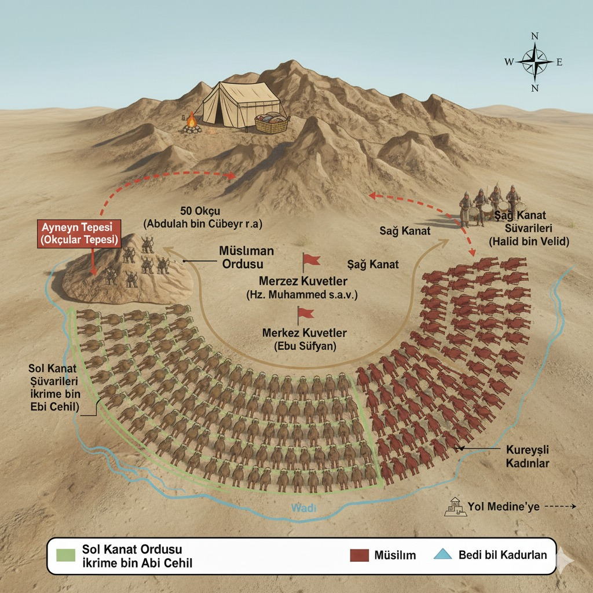

Uhud Savaşı hakkında önemli bilgilere ulaşmak için harita ve bilgi panelindeki ilgili alanın üzerine tıklayabilirsiniz.
UHUD SAVAŞI
Aynayn Tepesi (Okçular Tepesi)
- Komutan: Abdullah bin Cübeyr (r.a.) ve 50 okçu.
- Önemi: Stratejik bir geçidi kontrol ederek Müslüman ordusunun arkasını güvenceye alıyordu.
- Dönüm Noktası: Okçuların emre uymayıp tepeyi terk etmesi, Halid bin Velid'e kritik bir saldırı fırsatı verdi.

Müslüman Merkez Kuvvetler (Hz. Muhammed s.a.v.)
- Komutan: Hz. Muhammed (s.a.v.)
- Konumu: Uhud Dağı'na yaslanmış ana kuvvet.
- Savaşın Seyri: Başarılı bir başlangıçtan sonra, arkadan gelen saldırıyla büyük kayıplar vererek dağılma tehlikesi yaşadı.
Sağ Kanat Süvarileri (Halid bin Velid)
- Komutan: Halid bin Velid.
- Taktik: Boşalan Okçular Tepesi'ni kullanarak Müslüman ordusunu arkadan çembere aldı.
- Sonuç: Savaşın kaderini değiştiren ana taktik hamle oldu.
Merkez Kuvvetler (Ebu Süfyan)
- Komutan: Ebu Süfyan (Kureyş Başkomutanı.)
- Savaşın Seyri: İlk başta zor durumda kaldı, ancak Halid bin Velid'in hamlesiyle toparlanıp zafer kazandı.
Sol Kanat Süvarileri (İkrime bin Ebi Cehil)
- Komutan: İkrime bin Ebi Cehil.
- Rolü: Müslüman sol kanadına karşı saldırı başlattı.
Savaşın Genel Özeti
- Sebebi: Bedir Savaşı'nın intikamı.
- Taktik Hata: Okçuların tepeyi terk etmesi.
- Sonuç: Müslümanlar için ağır bir mağlubiyet, ancak Kureyş Medine'yi ele geçiremedi.